| Parent category | Instantaneous behaviour | definition | |
|---|---|---|---|
| 0 | locomotion | foraging | Foraging for detritus and small organisms on mudflats or in shallow waters. Dactyl(s) is moving towards the mouth. |
| 1 | resting | burrowing | The crab is observed resting in its burrow. There are no conspecific interactions. |
| 2 | locomotion? | entering burrow | Actively entering an uninhabited burrow. |
| 3 | locomotion? | exiting burrow | Actively exiting a burrow. |
| 4 | locomotion? | maintaining burrow | Digging and excavating burrows, carrying sediment to/from the burrow entrance. |
Video-based analysis of animal behaviour
SWC/GCNU Neuroinformatics Unit
Niko Sirmpilatze, Chang Huan Lo, Sofía Miñano
Introductions
 Niko Sirmpilatze
Niko Sirmpilatze
 Chang Huan Lo
Chang Huan Lo
 Sofía Miñano
Sofía Miñano
Course materials
Schedule: morning
| Time | Topic | Goals |
|---|---|---|
| 10:00 - 10:20 | Welcome | Introductions, troubleshooting |
| 10:20 - 11:00 | Theory: Quantifying Behaviour | What is behaviour, detection & tracking, pose estimation |
| 11:00 - 12:00 | Practice: SLEAP I | Label data, train models |
| 12:00 - 12:15 | Coffee Break | |
| 12:15 - 13:00 | Practice: SLEAP II | Evaluate models, run inference |
| 13:00 - 14:00 | Lunch break |
Schedule: afternoon
| Time | Topic | Goals |
|---|---|---|
| 14:00 - 15:45 | Practice: movement | Load pose tracks into Python, clean and visualise data, compute kinematics |
| 15:45 - 16:00 | Coffee break | |
| 16:00 - 16:30 | Theory: From behaviour to actions | Approaches to action segmentation |
| 16:15 - 17:30 | Demo: Keypoint-MoSeq | Extract behavioural syllables |
Install software requirements
You were asked to pre-install two conda environments for the practical exercises. Check that you have them installed:
If you don’t have them, you can create them as follows:
- SLEAP: Use the conda package method from the SLEAP installation guide.
- Keypoint-MoSeq: Use the recommended conda installation method.
Theory: Quantifying Behaviour
What is behaviour?
Defining behaviour
The total movements made by the intact animal
Tinbergen, 1955
Behavior is the internally coordinated responses (actions or inactions) of whole living organisms (individuals or groups) to internal and/or external stimuli, excluding responses more easily understood as developmental changes
Levitis et al., 2009
Why does neuroscience need behaviour?
Neuroscience needs behaviour 1/2
…detailed examination of brain parts or their selective perturbation is not sufficient to understand how the brain generates behavior
…it is very hard to infer the mapping between the behavior of a system and its lower-level properties by only looking at the lower-level properties
The behavioral work needs to be as fine-grained as work at the neural level. Otherwise one is imperiled by a granularity mismatch between levels…
Neuroscience needs behaviour 2/2
The Datta lab embraces the perspective of the ethologists: if we are to understand how the brain works, we need to think about the actual problems it evolved to solve. Addressing this challenge means studying natural behavior — the kinds of behaviors generated by animals when they are free to act on their own internally-generated goals without physical or psychological restraint…really, the kinds of behaviors you see when you watch lions in the wild, mice in a home cage, or humans at the mall. Importantly, when one observes animals expressing spontaneous, self-generated behavior, it is clear that much of what they are doing is exploring the world — using movement to sense what is out there, and taking advantage of sensation to inform future movements. Answering the question — how does the brain give rise to natural behavior? — therefore requires understanding how sensory and motor systems are usefully intertwined to support cognition.
Quantifying behaviour: ethogram
Ethogram: a list of typical behaviours performed by an animal, including when and how often they occur
| Time after start (min) | Foraging | Eating | Grooming |
|---|---|---|---|
| 0:30 | 0 | 0 | 1 |
| 1:00 | 0 | 0 | 1 |
| 1:30 | 1 | 0 | 0 |
| 2:00 | 0 | 1 | 0 |
Crab ethogram example
Crab ethogram data collection
| video file | tide category | present population | selected observation period start | real time | observation minute from start | crab ID | sex | instantaneous behaviour | |
|---|---|---|---|---|---|---|---|---|---|
| 0 | tub2023-04-23T08_00_00.avi | high | 25 | 20:34 | 20:35 | 1.000000 | 52 | m | shoreline resting |
| 1 | tub2023-04-23T08_00_00.avi | high | 25 | 20:34 | 20:35 | 1.000000 | 68 | f | burrowing |
| 2 | tub2023-04-23T08_00_00.avi | high | 25 | 20:34 | 20:36 | 2.000000 | 52 | m | shoreline resting |
| 3 | tub2023-04-23T08_00_00.avi | high | 25 | 20:34 | 20:36 | 2.000000 | 68 | f | burrowing |
Quantifying behaviour: modern

Detection
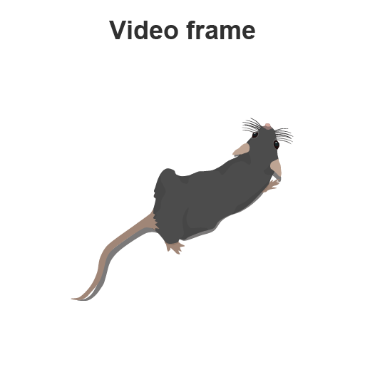
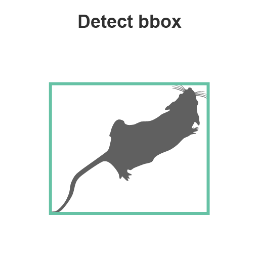
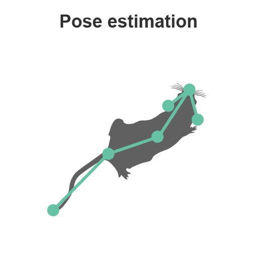
Tracking

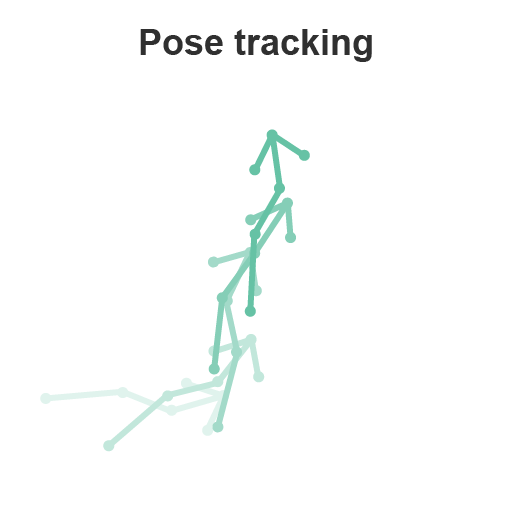
Pose estimation

- “easy” in humans - vast amounts of data
- “harder” in animals - less data, more variability
Pose estimation software
DeepLabCut: transfer learning
SLEAP:smaller networks

These handle pose estimation (detection) and tracking of single/multiple animals.
Poll: are you familiar with pose estimation?
Multi-animal part grouping
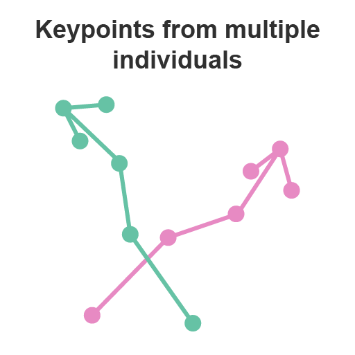
Top-down vs bottom-up

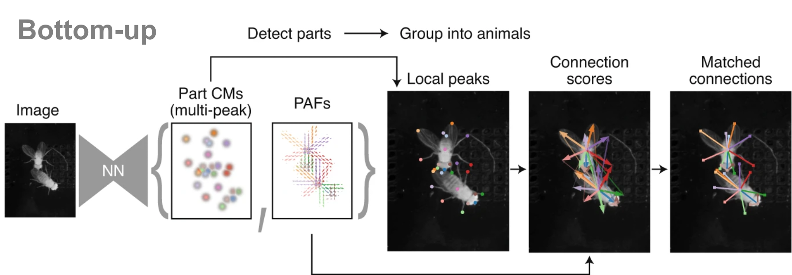
Multi-animal identity tracking

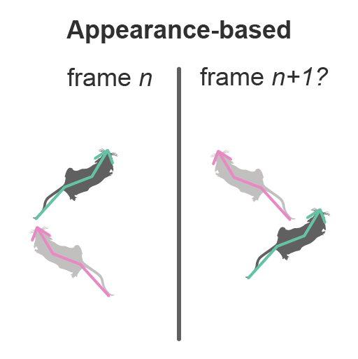
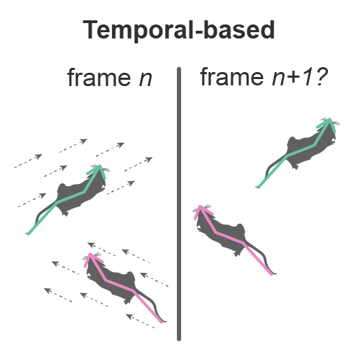
3D pose estimation

Practice: SLEAP I
Which mouse is more anxious?
Click here to post your answers
The Elevated Plus Maze
- Structure: 2 open arms, 2 closed arms, central area
- Exploits rodents’ natural aversion to open spaces and height
- Less anxious animals spend more time in open arms
Task: quantify time spent in open arms / closed arms
The dataset
$ cd behav-analysis-course
The SLEAP workflow

Create a new project
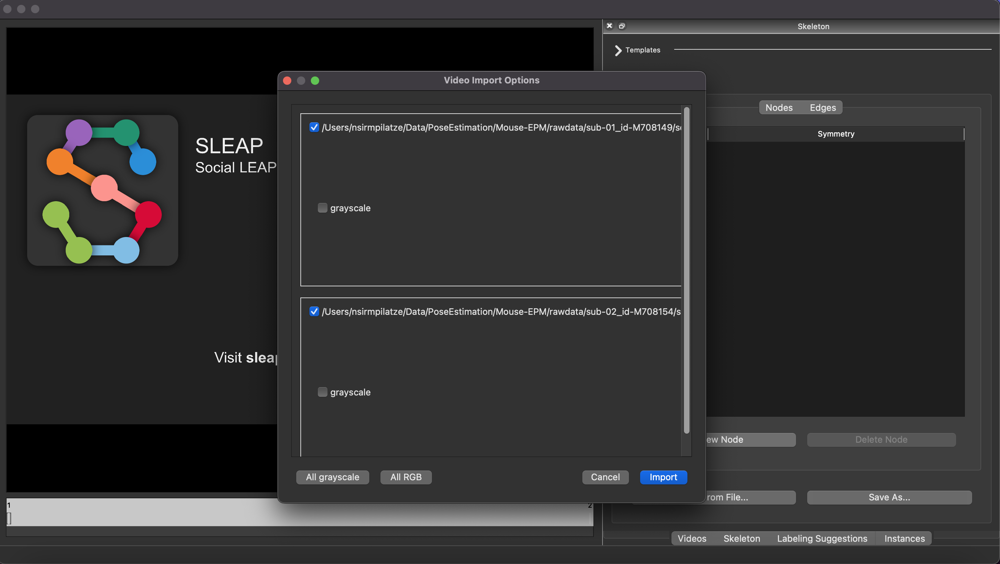
Define a skeleton
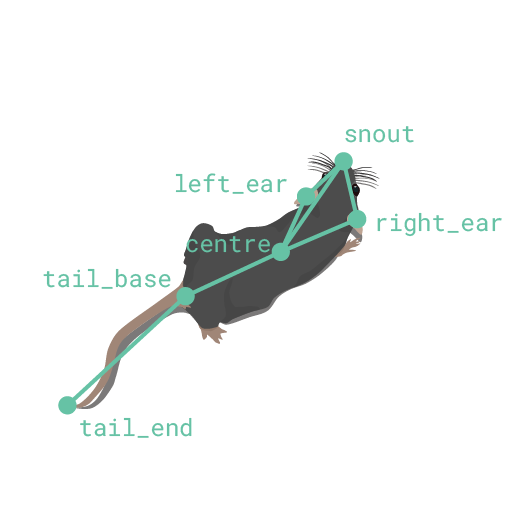
| Source | Destination |
|---|---|
| snout | left_ear |
| snout | right_ear |
| snout | centre |
| left_ear | centre |
| right_ear | centre |
| centre | tail_base |
| tail_base | tail_end |
Save the project right after defining the skeleton!
Generate labeling suggestions
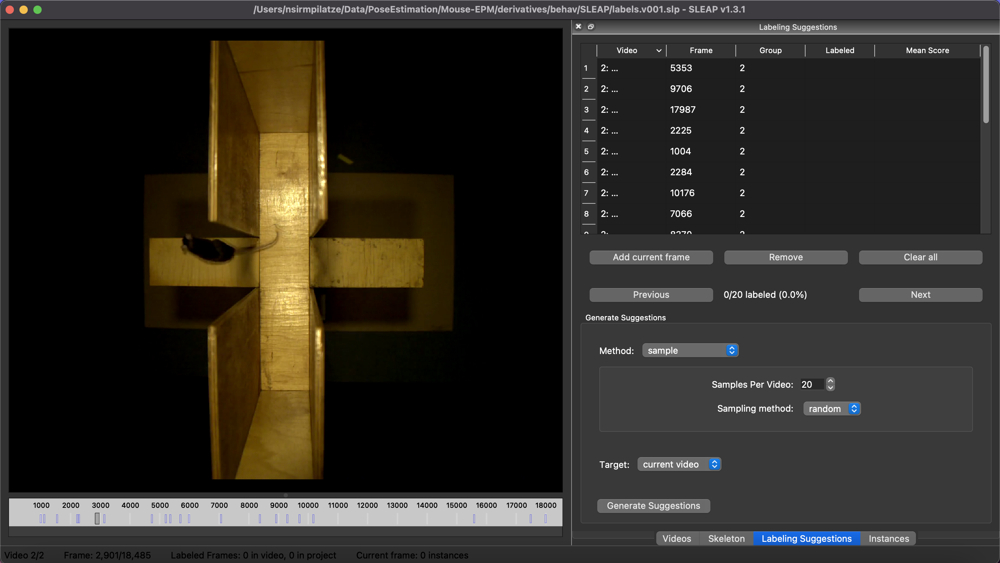
Label initial ~20 frames
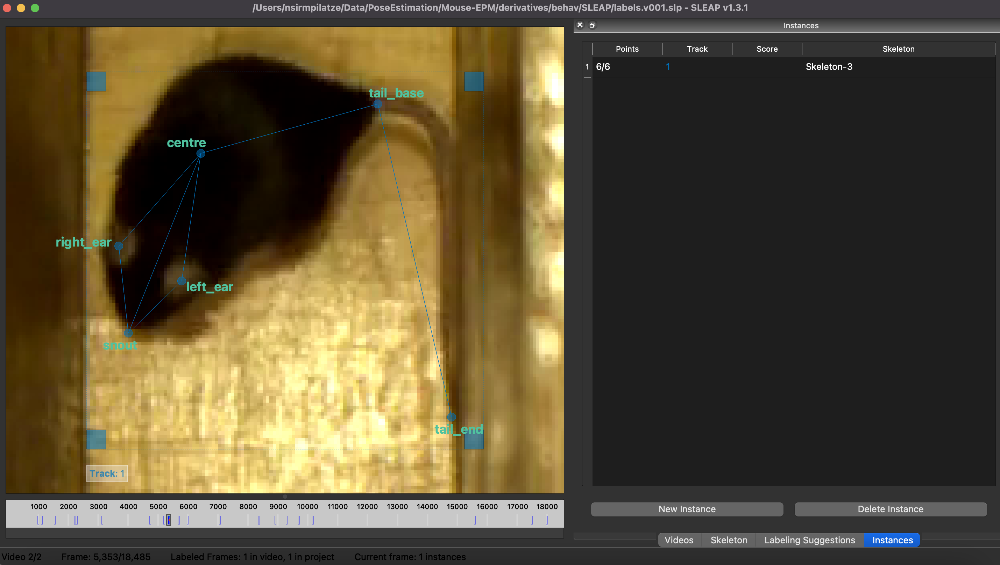
Start a training job 1/3
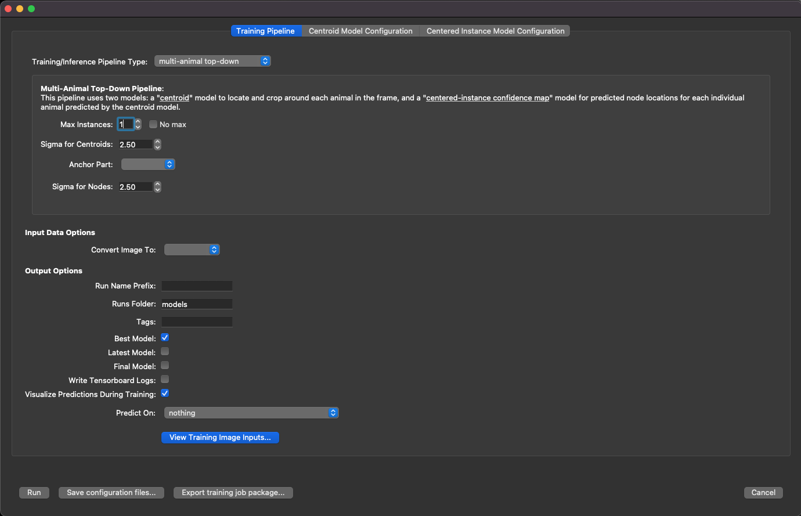
Start a training job 2/3
Start a training job 3/3
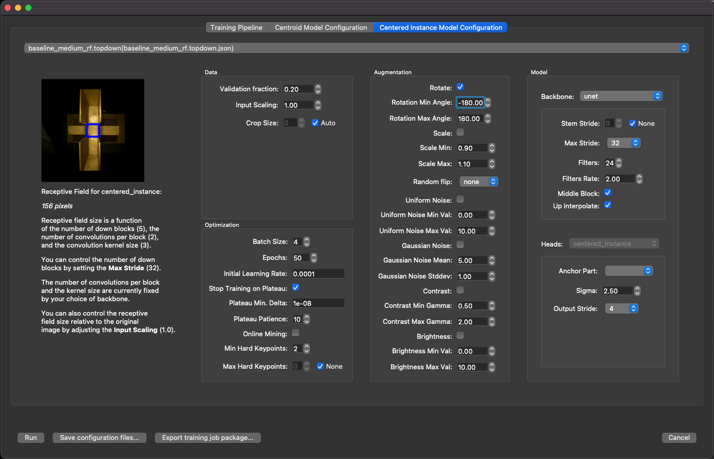
Monitor training progress
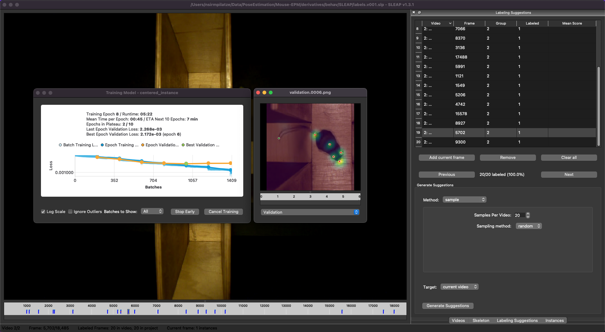
Coffee break ☕
Practice: SLEAP II
Evaluate trained models
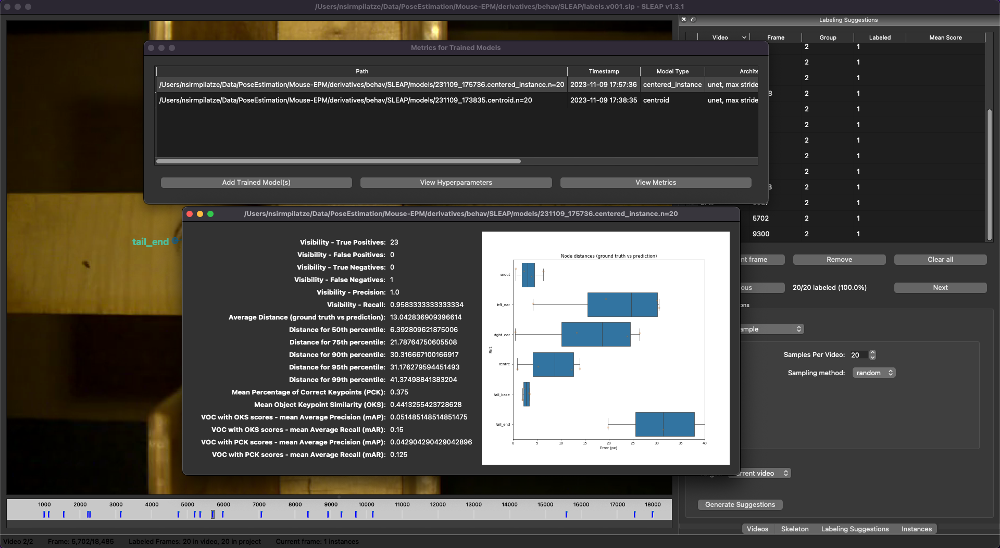
Run inference on new frames
Using SLEAP on the HPC cluster
- training and inference are GPU-intensive tasks
- SLEAP is installed as a module on SWC’s HPC cluster
module load sleap- See this guide for detailed instructions
- Come to the HPC course tomorrow
Predictions in the sample dataset
$ cd behav-analysis-course/mouse-EPM/derivatives
- Different pose estimation software produce predictions in different formats.
- Different workflows are needed for importing predicted poses into
Pythonfor further analysis.- e.g. for
SLEAPsee Analysis examples
- e.g. for
What happens after pose tracking?
- Load data into Python
- Visualise and inspect data
- Clean trajectories:
- Identify and drop outliers
- Smooth trajectories
- Interpolate over missing data
- Compute variables of interest:
- Velocity, acceleration, heading, etc.
- Distances/angles between body parts
- Time spent in different regions
- Application-specific: navigation, social interactions, gait analysis
Lunch break 🍽
Practice: movement
movement
A Python toolbox for analysing body movements across space and time, to aid the study of animal behaviour in neuroscience.
The movement poses dataset

The movement bboxes dataset
Time to play 🛝 with movement
In a terminal, clone the course repository and go to the notebooks directory:
git clone https://github.com/neuroinformatics-unit/course-behavioural-analysis.git
cd course-behavioural-analysis/notebooksCreate a new conda environment and install required packages:
Once all requirements are installed, you can:
- open the
EPM_analysis.ipynbnotebook - select the environment
epm-analysisas the kernel
We will go through the notebook step-by-step, together.
Which mouse was more anxious?
This time, with numbers!
Coffee break ☕
Theory: From behaviour to actions
Discretising the continuous 1/2
Discretising the continuous 2/2
Supervised vs unsupervised tools
| Supervised | Unsupervised |
|---|---|
| SimBA | MotionMapper |
| DeepEthogram | MoSeq (depth- or keypoint-) |
| JAX Animal Behavior System | B-SOID |
| MARS | VAME |
| DLC2action |
Problems with supervised methods
Problems with unsupervised methods
Demo: Keypoint-MoSeq
Motion Sequencing
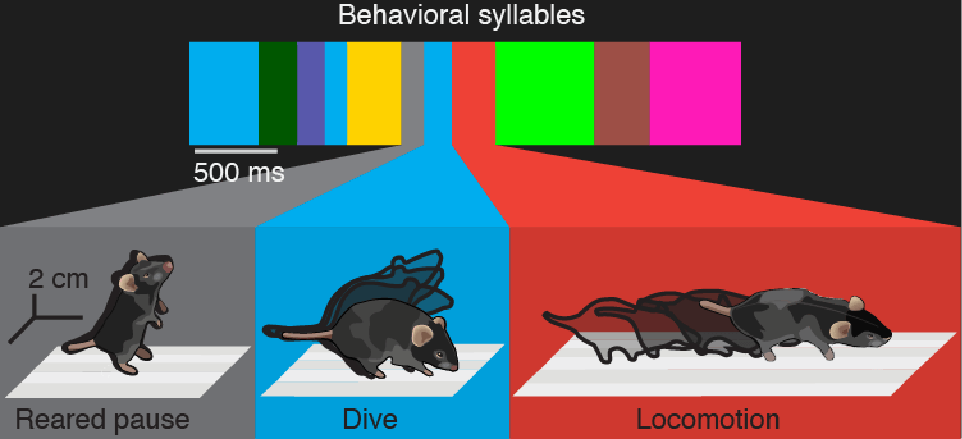
- Timescale is controlled by the
kappaparameter - Higher
kappa> higher P(self-transition) > “stickier” states > longer syllables
Keypoint-MoSeq
Can we apply MoSeq to keypoint data (predicted poses)?
Problems with keypoint data
- Keypoint noise leads to artifactual syllables
- We should somehow isolate true pose from noise
- But smoothing also blurs syllable boundaries
Solution: a more complex model
Switching Linear Dynamical System (SLDS): combine noise-removal and action segmentation in a single probabilistic model

Keypoint-MoSeq drawbacks
- probabilistic output
- stochasticity of output syllables
- must fit ensemble of models and take a “consensus”
- limited to describing behaviour at a single time-scale
- but can be adapted by tuning
kappa
- but can be adapted by tuning
- may miss rare behaviours (not often seen in training data)
Let’s look at some syllables
We’ve trained a keypoint-MoSeq model on 10 videos from the (EPM) dataset.
Time to play 🛝 with Keypoint-MoSeq
We will use the trained model to extract syllables from a new video.
- Navigate to the same repository you cloned earlier
cd course-behavioural-analysis/notebooks - open the
EPM_syllables.ipynbnotebook - select the environment
keypoint_moseqas the kernel
We will go through the notebook step-by-step, together.
Feedback
Tell us what you think about this course!
Write on IdeaBoardz or talk to us anytime.
Join the movement!
Contributions to
movementare absolutely encouraged, whether to fix a bug, develop a new feature, improve the documentation, or just spark a discussion.

Sainsbury Wellcome Centre | 2024-10-03